1. 정보보안¶
일부 내용 및 그림의 출처는 인천대학교 컴퓨터 공학부 "컴퓨터 네트워크 보안" 강의자료를 참고하였습니다.
1.1. Overview¶
1.1.1. CIA¶
- confidentiality : 기밀성, 데이터 및 프라이버시를 숨기는 특성
- integrity : 무결성, 비 인가자에 의한 데이터와 시스템 변경, 삭제, 생성을 막는다.
- availability : 가용성, 권한이 인가된 사용자가 시스템을 사용하길 원할때 잘 동작하는 것이다.
Risk, Threat, Countermesure
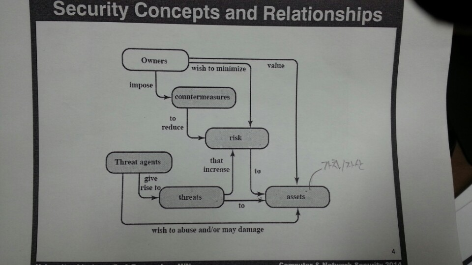1.1.2. Terminology¶
- Adversary : 시스템을 공격하는 사람
- Attack : 지능적 위협에 의한 시스템 공격
- CounterMeasure : 위협, 취약점, 공격을 감소시키는 기술, 장치
- Risk : 위협에 의해 발생될 손실
- Security Policy : 자원을 보호하기 위해 정책이나 규칙
- System Resource : 시스템에 저장된 데이터
- Threat : 시스템에 해를 끼칠 가능성
- Vulnerability : 시스템 설계, 구현상의 취약점
1.2. 공개키 기반 (PKI, Public Key Infrastructure)¶
공개키 기반은 공개키 및 비밀키 생성과 인증서를 발급하고 저장하고 폐기하는 시스템의 집합이다. 일반적으로 인증 기관(CA, certificate authority)에서 인증서를 발행, 폐기, 공개키 분배를 맡는다. 등록 대행 기관(RA, registration authority)은 인증서 생성을 요청한 사용자를 인증하는 역할을 맡는다.
공개키 기반은 공인인증서, 애플리케이션 인증서(.p12, 비밀키 포함), SSL 인증서 관리에 사용된다.
1.2.1. 전자 인증서 (Digital Certificate)¶
전자 인증서는 공개키, 발행자 서명, 공개키의 주인에 대한 정보를 포함한다. 전자 인증서는 특정 공개키가 어떤 개체와 연결되어 있는지 확인하는데 사용된다.
1.3. Cryptographic tools¶
1.3.1. 대칭키 암 vs 공개키 암호¶
1.3.1.1. 대칭 암호화 방식¶
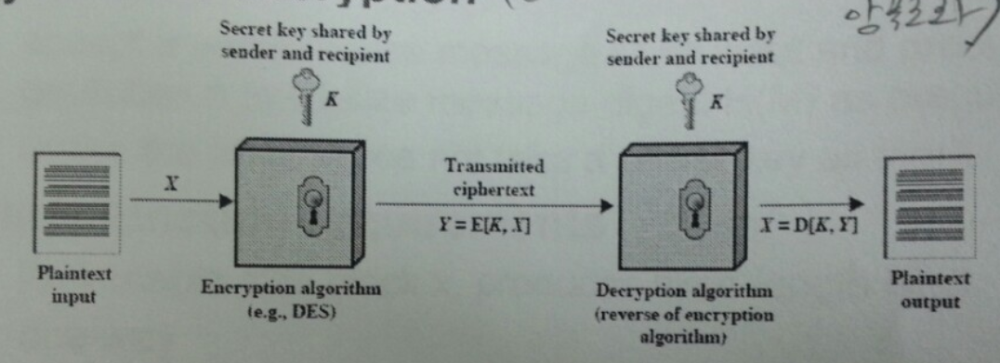대칭 암호화 방식의 중요한 요구사항은 강력한 암호화 알고리즘 과 공유한 비밀키 보관 이다.
일반적인 대칭 암호화 공격 방식 cryptanalysis(암호 해독) 이나 brute-force attack(무작위 공격) 이 있다.
1.3.1.2. 블록 단위 암호화 방식¶
고정된 크기의 블록으로 암호화 하는 방식이다. 대표적인 알고리즘으로 DES, 3DES, AES 이 있다. 1998년에 DES는 안전하지 않는 알고리즘으로 증명됬다. 3DES는 DES의 3배 정도 크기의 키를 가지고 있다.
1.3.1.3. 스트림 암호화 방식¶
키값에 따라 나온 일련의 암호로 암호화하는 방식이다.
1.3.1.4. 공개키 암호화 방식¶
공개키와 비밀키로 암호화하는 방식으로 기밀성, 인증, 데이터 무결성 증명에 사용된다.
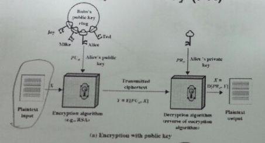공개키로 데이터를 암호화할 경우 비밀키를 가진 쪽에서만 복호화할 수 있기 때문에 기밀성이 보장된다.
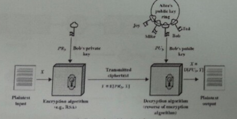비밀키로 데이터를 암호화할 경우 공개를 받은 측에서 풀 수 있는데 풀릴 경우 비밀키의 소유자가 누군지 인증되고 데이터의 무결성을 보장받을 수 있다. 이유는 공격자가 비밀키를 추측해서 암호화하기 어렵기 때문이다. 대표적인 알고리즘은 RSA , Diffie-Hellman 키 교환, 전자 서명 표준(NIST)등이 있다.
1.3.1.5. AES (Advanced Encryption Standard)¶
AES는 고급 암호화 표준으로 대칭키 알고리즘의 한 종류이다. 128비트 블록 및 128, 192, 256 비트의 키를 사용할 수 있다. 주요 특징으로 치환(Substitution), 순서바꿈(Permutation)을 사용하여 암호화 한다.
AES 암호화 알고리즘은 다음과 같다. 먼저 10개의 Round를 거쳐야 암호문이 나오게 된다. 먼저 비밀키가 확장되어 각 Round의 키로 사용된다. 각 Round는 substitute bytes, shift rows, mix columns, add round key 4가지 작은 단계로 구성된다.
정확히 말하면 암호화 과정은 add round stage + 9 rounds + 10th round of 3stages 로 구성되어 있다. 아래 그림과 같다.

다음은 S-BOX이다.
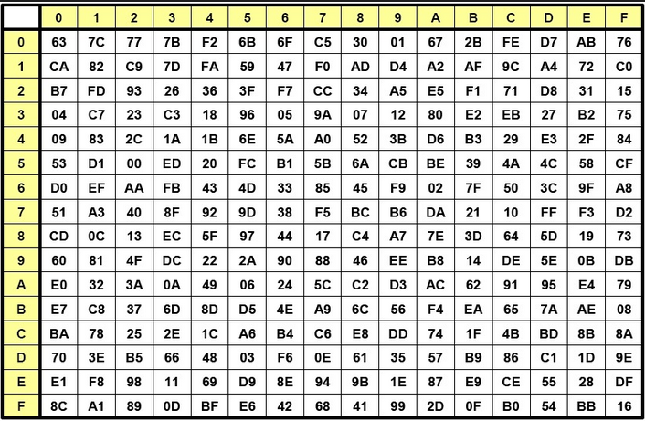먼저 substitute bytes 는 다음과 같은 S-BOX의 값을 보고 다른 값으로 치환되는 과정이다.
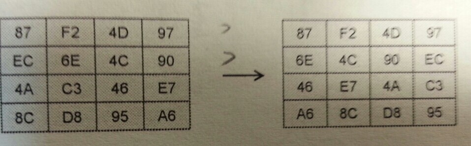그 다음 shift rows 는 left rotate를 이용해 각 컬럼의 위치를 바꾸는 과정이다. 이는 간단한 Permutation 연산으로 볼 수 있다.
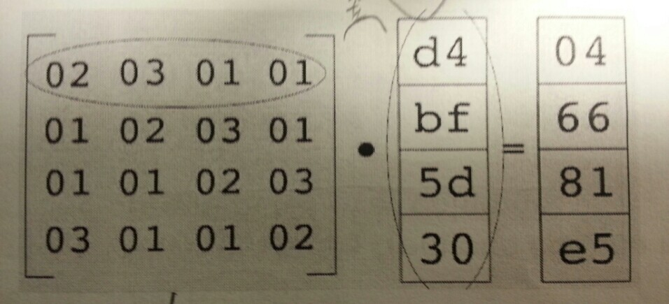다음 mix columns 는 컬럼 단위로 수행되는 연산으로서 컬럼에 속한 4개의 바이트를 행렬 연산을 이용하여 다른 바이트로 치환하는 것이다. 이는 Substitution 연산이다. 복호화는 역행렬을 이용해서 수행한다고 한다.
마지막으로 add round key 는 간단하게도 expanded key와 XOR 연산을 한다. (각 블록이 16 바이트니깐 딱 맞네요)
일련의 과정이 간단하지만 키 확장과 다른 단계들이 복잡도를 높여서 보안을 강화한다고 한다.
1.3.1.6. RSA (Rivest, Shamir, Adleman)¶
RSA는 공개키 암호 시스템중 하나로 큰 숫자를 소인수 분해하기 어렵다는 문제에 기반을 둔 암호화 알고리즘이다. 아래는 알고리즘 설명을 수기로 작성한 것이다. (글씨체가 엉망이네요 ㅠ)
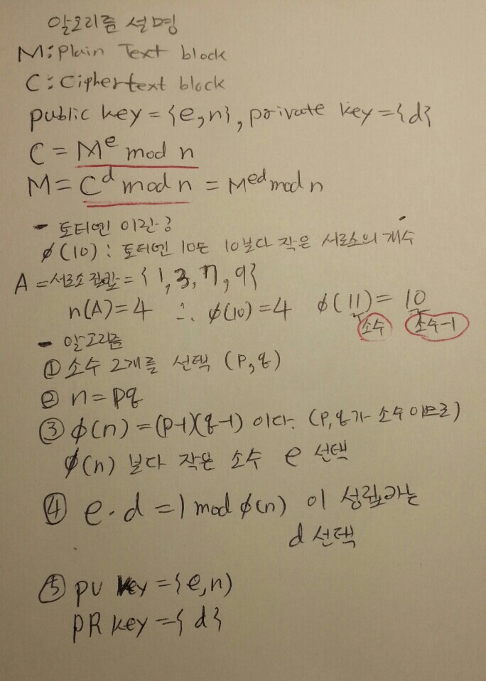결국 공격자는 {e,n}을 알고있다고 하여도 n의 소인수 분해가 어려워서 (p,q를 찾기 어렵기 때문에 (p-1)*(q-1) ,즉 토티엔을 찾기 어려움) 결국 n의 토티엔을 찾기 어렵다. 이 점에서 RSA의 보안은 강력하다.
하나의 예로는 n=pq = 17*11 = 187, 토티엔(n) = (p-1)(q-1) = 160 공개키(e)로 7을 선택하고 비밀키(d)로 23을 선택할 수 있다. (7*23=161=1 mod 160)
RSA를 공격하는 방식에는 무차별 대입 공격, 수학적 공격(소수를 찾는 법), 타임 공격(해독 시간을 분석), 선택된 암호문 공격 등이 있다. 가까운 미래에는 키 사이즈를 1024 ~ 2048 정도로 늘리는 것이 안전하다고 한다.
1.3.2. Challenge–response authentication¶
Challenge–response(질문-응답) 인증은 한쪽에서 질문하고 한쪽에서 올바른 답을 제시하는 프로토콜의 집합이다. 예시로 암호를 물어보고 대답하는 암호 인증(password authentication)이 있다.
SMB 프로토콜에서 사용되는 NTLM 암호화 방식에서 암호를 인증할때 사용한다.
질문 응답 인증은 비밀키를 전달하는 과정없이 일회용 난수를 통해 서로가 비밀키를 알고 있다는 사실을 상대방에게 납득시키는 과정을 포함한다. 서버든 클라이언트든 상대방을 납득 시킬때도 사용할 수 있으며 상호 인증 시퀀스를 통해 이것이 가능해진다. 상호 인증 시퀀스는 다음과 같다.
- 서버는 클라이언트에게 임의의 숫자(cryptographic nonce, challenge, sc)를 보낸다.
- 클라이언트는 임의의 숫자(cc)를 생성한 뒤 hash(cc + sc + secret key) 와 cc 를 을 보낸다.
- 서버는 hash(sc + cc + secret key) 을 보낸다.
- 전달 받은 해시값을 이용해 서로가 올바른 비밀키를 갖고 있는지 확인한다.
1.3.3. NTLM¶
ntlm은 질문 응답 인증의 하나로 과거 도메인 사용자 인증을 위해 사용되던 프로토콜이며, 현재는 Kerberos 로 대체되었다. 하지만 여전히 몇몇 오래된 도메인 서버나, IP로 운영되는 App 서버에서 활용되고 있다.
기본적으로 Kerberos가 적용되면 NTLM은 사용되지 않는다고 봐야한다.
인증과정
- 사용자는 임의 HTTP 요청을 서버에 보낸다. 서버는 401응답과 함께 `WWW-Authenticate: NTLM`이 반환한다.
2. 클라이언트는 이름, 도메인 이름을 App 서버에 보낸다. 4. 서버는 클라이언트에게 난수(challenge, nonce)를 401응답과 함께 보내고, 클라이언트는 사용자 키(해시된 암호, 이는 Kerberos에서도 사용됨)를 캐시에 만들고, 사용자 암호와 난수를 이용해 만든 해시를 서버에 보낸다. 5. 서버는 사용자 이름과 해시값을 도메인 컨트롤러에 보낸다. 6. 도메인 컨트롤러는 SAM(Security Account Manager)에서 사용자 암호의 해시를 얻어내어 클라이언트 처럼 난수를 해시로 만든다. 7. 도메인 컨트롤러는 5번과 3번에서 만들어진 해시를 비교하여, 동일할 경우 인증 성공을 반환한다.
1.3.4. Hash¶
Hash 함수는 다양한 크기의 메세지를 받아 고정된 크기의 메세지를 만든다. MAC과 달리 키가 필요하지 않다.
Hash 함수의 요구사항
- 단방향 함수 : 역변환이 어렵다
- 약한 충돌 저항성 : 한개의 메세지 내용을 알때 같은 해시값을 갖으며 내용이 다른 메세지를 찾기 어렵다.
- 강한 충돌 저항성 : 메세지 내용을 모를때 해시값이 같은 쌍을 찾기 어렵다.
1.3.5. Message Authentication¶
MAC(Message Authentication Code)이란 지정된 송신자가 보냈는지 메시지는 결함이 없는지 확인할때 사용하는 태그이다. 송신측은 키와 MAC 알고리즘을 바탕으로 인증 코드를 생성하고 메세지에 포함시켜 전송한다. 수신측은 키와 인증코드를 바탕으로 메세지가 올바른지 검사한다. MAC은 인증 및 데이터 무결성 을 보장한다.
1.3.6. Message Authentication using Hash Functions¶
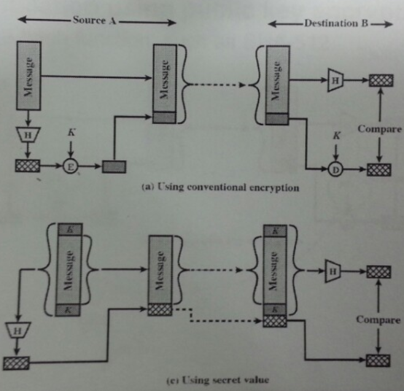(a)Using conventional encryption 방식은 송신측은 메세지를 해싱한 값을 비밀키로 암호화하여 전달하고 수신측은 복호화한 후 해시값을 비교하는 방식이다.
(c)Using secret value 방식은 (메세지 + 비밀키)를 해싱하여 값을 만들고 그 값을 메세지에 담아 전달하여 인증하는 방식이다.
1.3.7. Digital Signature(전자 서명)¶
공개키 암호화 방식을 통해 인증을 하는 방식으로 공개키의 특징을 사용한 것이다. 먼저 메세지를 해싱한 후 그 값을 비밀키로 암호화하여 전송한다. 수신 측은 공개키로 서명 값 을 복호화 하고 해시 값을 비교한다. 해시 함수를 사용한 MAC 방식과 유사하다.
전자서명은 인증과 무결성을 모두 보증하는 방식이다.
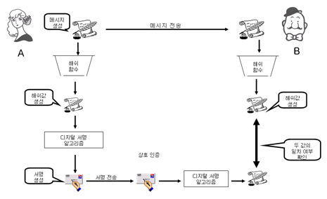1.3.8. Digital envelope(전자 봉투)¶
송신측은 랜덤하게 생성한 비밀키로 메세지를 암호화하고 또한 그 비밀키를 공개키로 암호화한 후 봉투에 넣는다. 전자 봉투를 수신측에 보내게되고 수신측은 자신의 개인키로 상대방이 보낸 암호화된 비밀키를 복호화 하여 비밀키를 얻어내고 그 비밀키로 암호화된 메세지를 복호화 하여 메세지를 확인하는 방식이다. SSL에서 세션키(비밀키)를 공유하는 방식에서 사용된다.
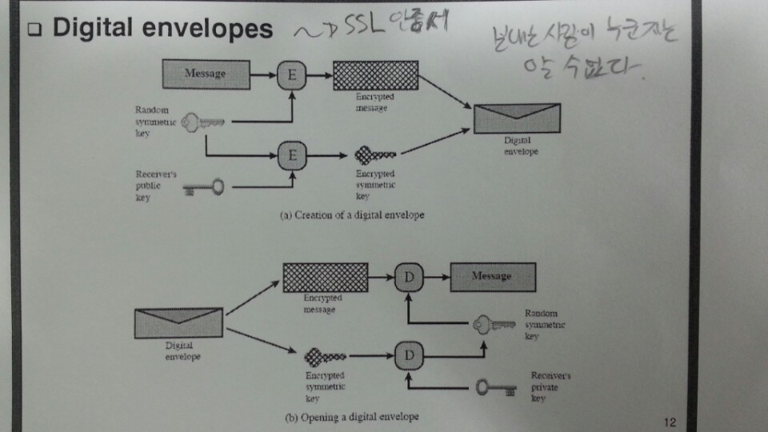1.3.9. SSL 인증서, 공인인증서와 전자서명¶
SSL 인증서는 서버가 신뢰할 수 있는지 증명할 수 있는 전자인증서이다. 이때 공개키 암호화 방식을 사용하여 사용자 인증과 인증서의 무결성을 증명할 수 있다. Digital Signature(전자 서명) 을 참고하도록 하자. SSL 인증서는 도메인 정보, 서버 공개키 등을 저장하고 있다. SSL 인증서 정보로부터 해시값을 만들고 이를 CA의 비밀키로 암호화 한 값을 전자서명으로 사용한다. 인증서와 함께 전자서명을 보내서 인증서의 무결성 및 신뢰성을 보장한다. 브라우저는 이미 CA의 비밀키에 대한 공개키를 가지고 있다. CA는 신뢰할 수 있는 제3의 인증기관이다. SSL 인증서의 서버 공개키를 이용하여 전송계층을 암호화할때 사용하는 대칭키를 암호화하여 전송한다.
공인인증서는 클라이언트가 신뢰할 수 있는지 증명할 수 있는 전자인증서이다. 공인인증서는 암호화된 개인키와 공개키로 이루어진다. 인증서의 개인키와 공개키는 한 쌍이다. 패스워드를 입력받아 개인키를 얻어낸뒤 {결재정보, 암호화된 결재정보, 공인인증서}를 전달한다. 먼저 공인인증서의 전자서명 인증 절차에 따라 인증서가 신뢰할 수 있는지 판단한다. 만약 공인인증서를 신뢰할 수 있다면 공개키를 신뢰할 수 있게된다. 수신한 전자서명을 이용해 결재정보가 옳바른지 인증하고 인증에 성공한다면 공인인증서의 역할이 끝나게된다.
1.3.9.1. 인증서 정보¶
- DN(Distinguished Name) : 고유 이름으로 불리며 인증서를 발급받는 개인이나 CA를 뜻한다. 아래 필드를 포함한다.
- CN(CommonName) : 가입자의 이름(도메인 명, 소유주 식별정보)
- OU(OrganizationalUnit) : 하위 조직명
- O(Organization) : 조직명
- C(Country) : 국가
- CA(certificate authority) : 인증기관이라 부르며 공개키 쌍을 관리하며 인증서를 발급, 저장, 폐기한다.
1.3.9.2. 인증서간 서명 매커니즘¶
인증서는 트리구조를 이루며 인증서끼리 서명하게된다. 인증서의 서명값은 발급자의 비공개키로 서명되어 발급자의 공개키를 통해 검증할 수 있다. 이 발급자의 공개키는 발급자 인증서에 포함되어 있고 이 인증서는 발급자의 발급자에게 서명된다. 이렇게 최상위 발급자(인증기관)을 만날때까지 재귀적으로 인증서가 검증된다. 루트 인증기관(Root CA)은 자체 서명이 되어있다. 일반적으로 브라우저는 유명한 인증 기관의 Root CA 인증서가 기본적으로 설치되어 있다.(Verisign 등)
1.3.10. Diffie-Hellman Key Exchange (디피-헬만 키 교환)¶
암호화되지 않은 통신망을 통해 두 사람만 알 수 있는 새로운 키를 만드는 만들고 교환하는 방법이다.
공식
- 앨리스는 소수 p, 그리고 1과 p-1사이의 g를 선택한뒤 밥과 공유한다.
- 앨리스는 정수 a를 선택한다. 밥은 정수 b를 선택한다.
- 각자 선택한 정수와 공식을 바탕으로 A와 B를 계산한다.
- 공식은 다음과 같다. \(A = g^a\) mod p \(B = g^b\) mod p
- 서로 A와 B를 교환하고 A와 B와 공식을 바탕으로 비밀키를 계산한다.
- 앨리스의 계산식은 다음과 같다. \(B^a\) mod p = \(g^{ab}\) mod p
- 밥의 계산식은 다음과 같다. \(A^b\) mod p = \(g^{ab}\) mod p
- 서로 공유된 비밀키로 암호화 통신을 할 수 있다. 또는, 키 유도 함수(key derivation function, KDF)를 통해 새로운 키를 만들 수 있다.
참고로 모듈러 연산의 곱셈 또는 거듭제곱 시 모듈러 연산은 밖으로 뺄 수 있다.
디피-헬만 키 교환의 단점은 중간자 공격에 의해 잘못된 키가 유도되어 정보를 탈취 당할 수 있다.
1.4. User authentication¶
사용자 인증 절차는 2단계로 나뉘어 진다. 먼저 신원확인(identification)절차가 있고 다음 인증정보확인 절차가 있다.
1.4.1. Salt with hash¶
암호를 해시로 저장할 때 Salt값이 사용된다. Salt값은 패스워드 파일에 중복된 패스워드를 없애준다. 그리고 사전공격을 어렵게 만들며 2개 이상의 다른 시스템에서 공유된 패스워드를 찾는것을 어렵게 한다.
1.5. Access control¶
인가되지 않은 자원의 사용을 예방하는 것
1.5.1. Discretionary access control (DAC)¶
재량 접근 제어로서 소유주의 제량에 의해 자원에 접근할 수 있게 하는 것이다.
1.5.2. Mandatory access control (MAC)¶
여러개의 보안 레벨을 둔다. 자원에 접근할 수 있는 사람이 다른 사람이 접근하게 할 수 있도록 설정하지 못할 수 있다.
1.5.3. Role-based access control (RBAC)¶
주어진 역할에 따라 접근할 수 있는 자원이 결정된다. 사용자와 역할을 나타내는 매트릭스와 역할과 객체 사이의 매트릭스 2가지로 관리된다. 객체의 종류는 프로세스, 장치, 메모리 위치, 객체 등이 있다.
- 프로세스 : 프로세스에 대한 삭제, 중지, 재개
- 장치 : 장치에 대한 읽기, 쓰기, 제어 동작, 블록, 블록해제
- 주체(subjects) : 객체의 접근 권한을 주거나 지울 수 있는 능력을 나타내고 있다.
1.5.4. Access Control Structure¶
접근 제어 매트릭스는 구조 상 모든 공간을 사용하지 않아서 비효율적이다. 따라서 ACL을 사용한다. Access Control List (ACL) 은 각 자원에 어떤 사용자가 사용할 수 있는지 연결 리스트로 연결해놓은 것이다.
1.5.5. Capability tickets¶
각 사용자가 접근할 수 있는 파일을 연결리스트로 관리한다.
1.6. Malicious software¶
1.6.1. virus¶
다른 프로그램을 수정함으로써 다른 프로그램을 감염시키는 소프트웨어의 조각이다. 컴퓨터 바이러스의 3가지 부분은 감염 방법, 실행 조건, 바이러스 행동이 있다. 또한 4단계가 있는데 휴면기, 전파, 트리거, 실행 단계로 동작한다.
Compression virus는 바이러스를 기존 프로그램을 압축시키고 CV를 끼워넣는 방식의 바이러스 이다.
바이러스는 부트 섹터 감염, 파일 감염, 매크로 바이러스로 구성된다. 은폐하는 방식으로 바이러스를 나누면 암호화된 바이러스, 스텔스 바이러스, 다형성 바이러스, 메타모픽 바이러스가 있다.
- 암호화된 바이러스 : 암호키가 바이러스와 함께 저장되어 있음
- 스텔스 바이러스 : 안티 바이러스로 부터 전체 바이러스가 숨겨진 것
- 다형성 바이러스 : 다양한 변종이 있는 바이러스, 시그니처를 찾는 것이 어려움
- 메타모픽 바이러스 : 반복마다 자기자신의 행동을 바꾸는 바이러스
바이러스 키트는 초보자도 쉽게 다양한 바이러스를 만들게 해준다. 매크로 바이러스는 플랫폼 독립적이고 문서를 감염시키고 실행되지 않는다. e-mail을 통해 쉽게 퍼지고 파일 시스템 접근 제어가 제한된다.
1.6.1.1. 바이러스 대응책¶
안티바이러스는 예방, 탐지, 확인, 삭제기능을 가지고 있다.
안티바이러스 개발방식
- simple scanners : 시그니처에 특화된 스캐너 (같은 구조, 같은 비트 패턴)
- heuristic scanners : 암호화 키를 찾고 바이러스를 복호화 하여 찾는 방식의 스캐너, 무결성 체크를 한다.
- activity traps : 메모리에 거주하는 프로그램의 활동들을 분석
- full-featured protection
1.6.2. worm¶
네트워크 웜의 복제는 이메일, 원격 실행, 원격 로그인에 의해 이루어진다. 컴퓨터 바이러스와 같은 특징을 갖는다. 휴면기, 전파, 트리거, 실행 단계로 행동한다.
웜의 특징으로는 다른 감염될 시스템을 스스로 찾는 것, 원격 시스템과 연결을 맺는 것, 스스로를 원격 시스템에 복사하여 실행되도록 하는 것이다.
모리스웜은 로버트 모리스에 의해 1988년에 만들어졌다. 모리스웜은 호스트 PC를 찾고 접근권한을 얻으려 했다. 로컬 패스워드 파일을 크래킹하고 UNIX finger 프로토콜의 버그를 발동시키고 디버그 옵션이 걸린 trapdoor(유지보수를 위한 시스템의 구멍)의 버그를 발생시켰다.
다른 예로 Code Red 는 2001년에 MS IIS에 감염되는 웜바이러스이다. SQL Slammer 는 MS SQL Server에 버퍼오버플로우 공격을 하는 웜이다. 현재 웜 기술은 multiplatform, multiexploit(web server, browser, e-mail, file sharing), 빠른 전파속도, 다형성, 변성, 제로데이를 포함한다.
1.6.2.1. worm 대응책¶
대응책의 요구사항으로는 보편성, 시기적절성(timeliness), 탄성, 가용성, 투명성, 많은 커버리지가 있다.
대응책은 시그니처 기반으로 웜을 필터링하는 방식, 필터기반, 페이로드 분류 기반, 속도를 줄이거나 패킷을 드랍시키는 방식이 있다.
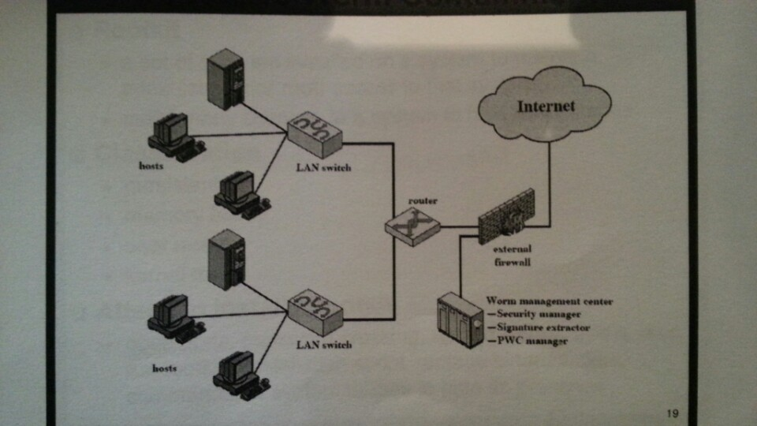 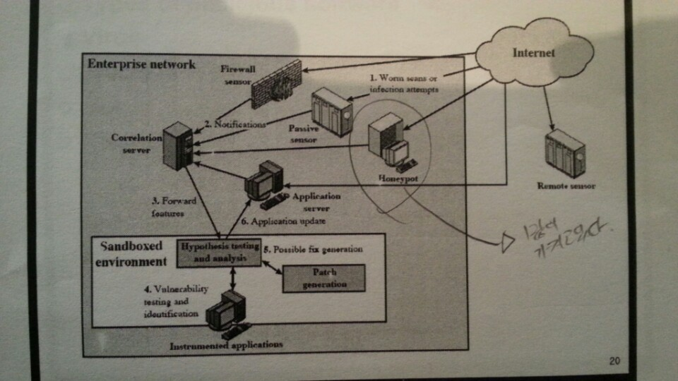1.7. DOS¶
CPU, memory, bandwidth, disk space 자원을 다 소모하게 함으로써 정상적으로 서비스를 수행하지 못하게 하는 공격이다. network, system, application과 같은 자원이 있다. 관리자는 DDOS 공격을 방어하기 위해 시스템 자원의 한계점을 알고 있어야 하며, 공격 유행에 따른 차단 정책을 가지고 있어야 한다.
1.7.1. DDoS 공격 대응 절차 및 목적¶
KISA 가이드 라인 에서는 다음과 같은 절차를 권장한다.
- 공격 인지를 위한 체크포인트
- BPS및 PPS규모를 확인하여 평시와 비교
- 웹 서버 로그를 확인하여 특정 페이지 접속 규모 확인
- DDoS 공격 유형 파악
- 대역폭 소진(UDP/ICMP Flooding), 연결 자원 부하(HTTP, DB 연결 부하 유발), 웹서버 자원 부하(Syn Flooding등 확인)
- 공격유형에 따른 차단정책 정의 및 대응
- UDP/ICMP Flooding: Source IP를 변조하거나 실제 IP를 이용해 UDP/ICMP 패킷을 다량 전송하는 공격. 방화벽이나 라우터에서 프로토콜 차단(Access Control List). 임계 PPS 수치를 유입되는 수치보다 낮게 설정
- Get Flooding 공격 방어: 다량의 HTTP 요청을 하여 웹서버 연결 및 DB 연결에 부하를 일으키는 공격. 출발지 IP 기준으로 임계치를 초과할 경우 IP 차단. 정밀한 검사를 통해 비정상적인 HTTP GET 요청 차단
- Syn Flooding: 다량의 SYN 패킷을 서버로 전달하여 서버의 대기큐(Backlog Queue)를 가득채워 클라이언트 연결 요청을 거부하는 공격. 임계치를 초과할 경우 소스 IP 차단.
- 사후조치
- 서버 가용성 임계치 분석 후 차단 정책 업데이트
1.7.2. Source address spoofing¶
계속해서 보면 Source Address spoofing을 통한 공격이 있다. 위조한 주소를 가진 패킷을 만드는 방식이다. ICMP echo request를 이용한 방식이 있다. 다른 방식은 SYN spoofing 공격이다. Source Address를 스푸핑 하여 Syn 패킷을 보냄으로써 Spoofed Client가 SYN,ACK를 받도록 한다.
1.7.3. Flooding Attacks¶
프로토콜을 활용하여 대량의 패킷을 보내는 공격이다. 주로 ICMP, UDP, TCP SYN을 사용한다. UDP는 기본 echo service를 위해 사용된다. ICMP desination unreachable packet 이 반환될 경우 DDoS 공격을 예측할 수 있다.
1.8. Intrusion detection(Intrusion Detection)¶
IDS는 Host 기반과 Network 기반으로 나뉜다. Host 기반은 호스트의 이벤트를 관찰하고 호스트의 특징을 관찰하는 시스템이고 Network 기반은 세그먼트나 장치, 네트워크 분석, 프로토콜 분석을 통해 네트워크를 관찰하는 시스템이다.
HDS는 기본적으로 사용자의 레코드를 수집한다. native audit records 는 사용자의 활동을 모으는 소프트웨어를 두는 것이다. detection-specific audio records 는 IDS에서 요구하는 정보를 기록하는 것이다. 대표적인 항목은 주체, 행동, 객체, 예외조건, 자원사용, 타임스탬프이다.
HDS에서 탐지 방식은 크게 2가지로 나뉘어진다. 비정상 탐지(anomaly detection), 시그니처 탐지이다. 비정상 탐지는 통계적으로 비정상 행위를 탐지하는 방식으로 특정 이벤트가 필요 이상으로 발생하였을때나 과거 사용자의 행위를 프로파일링하여 탐지하는 방법이다.
Threshold 탐지 는 스레시홀드와 시간간격을 결정해야하며 복잡한 기술을 모았을때 유용하다. 프로파일링 방식 은 파라미터에 문제가 있는지 보며 카운터, 게이지, 간격 타이머, 자원 이용률이 사용된다. 또한 다양한 검사가 사용된다. 평균, 표준 편차, 변수 간의 상관관계, 시간 간격, markov process(변이될 확률을 이용한 검사) 등이 사용된다.
시그니처 탐지 는 공격 패턴이나 패턴에 대한 규칙을 세워서 탐지하는 방식을 뜻한다. 알려진 취약점 공격 코드를 찾고 아는것이 많은 보안 전문가들에 의해 룰이 생성된다.
휴리스틱룰은 다음과 같다.
- 사용자가 다른 사용자의 디렉토리를 읽지 못하게 한다.
- 사용자는 다른 사용자의 파일에 쓸 수 없다.
- 사용자는 같은시스템에 두번 이상 로그인해선 안된다.
- 사용자는 시스템 프로그램의 복사본을 만들어선 안된다.
NDS역시 시그니쳐 방식과 비정상 탐지 기술을 사용한다.
시그니처 방식
- NDS에서 시그니쳐 방식은 어플리케이션 계층을 탐지하면서 동작한다.
- 전송, 네트워크 계층 역시 탐지한다. 전송 계층에는 packet framgmentation이나 port scan, SYN floods 공격을 탐지하고 네트워크 계층은 스푸핑 공격, 헤더조작 공격을 탐지한다.
- 시스템에서 인가되지 않은 어플리케이션 서비스 역시 탐지한다.
- 정책 위배를 탐지한다.
비정상 탐지 방식
- DOS, scanning, worms 등을 탐지한다.
NDS의 종류는 inline sensor (pass through)와 passive sensors(tap)으로 나뉜다.
일반적으로 NIDS는 다음에 위치 시킨다.

1.9. Firewall¶
방화벽은 4가지 형태가 있다.
1.9.1. Packet Filtering Firewall¶
패킷 필터링 방화벽의 특징은 들어오거나 나가는 패킷에 룰을 적용시켜 버리거나 포워딩 시킨다는 점이다. 구체적으로 송수신 IP주소와 포트주소 그리고 IP프로토콜 필드, 인터페이스를 확인한다.
패킷 필터링 방식은 간단하고 사용자에게 투명성을 제공하고 빠르다. 그러나 상위 계층의 기능이 부족하고 어플리케이션 취약점에 약하다. 제한된 로깅, IP 스푸핑, 잘못된 설정으로 인한 보안문제에 민감하다.
패킷 핑터링 우회는 다음과 같다.
- IP 주소 스푸핑
- source routing attacks
특정한 라우터를 지남으로써 보안을 우회하는 방법
- 프레그먼트 공격
TCP헤더를 작은 패킷단위로 잘라서 보내는 방법
1.9.2. Stateful Inspection Firewall¶
Simple packet 방화벽은 1024~65535 포트의 인바운드 패킷을 허가해야만한다. 이것은 취약점을 만든다. 따라서 Stateful Inspection Firewall은 State Table을 관리한다. Source Address | Source Port | Destination Address | Destination Port | Connection State
1.9.3. Application-level Firewall¶
Application 프록시를 동작시켜 트래픽을 포워딩 해준다. 사용자는 게이트웨이에 접촉하고 게이트웨이는 호스트의 이름을 사용자에게 요청한다.
packet filter보다 더 안전하지만 추가적인 처리 오버헤드가 각각의 연결에 발생한다.
1.9.4. Circuit-level Firewall¶
circuit-level 프록시는 2개의 TCP 연결을 사용한다. 하나는 내부 호스트와 연결하고 다른 하나는 외부 호스트와 연결된다. 두개모두 연결되면 게이트웨이는 내용을 검사하지 않고 TCP 연결 사이에서 바로 포워딩 해준다.
1.9.5. Location & Configuration¶
호스트에 있는 방화벽은 개인 방화벽 소프트웨어로 서버에 설치되어 있다.
스크리닝 라우터는 패킷필터링 기능을 가진 라우터 이다.
single bastion inline은 상태유지 필터 및 어플리케이션 프로토콜을 사용한다.
single bastion T(탭)은 외부 서버가 위치한 DMZ에 있는 장비이다.
Double bastion inline 방식은 다음과 같다.
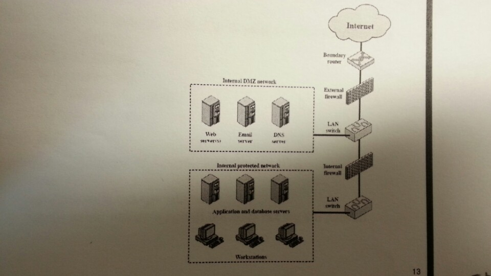분산 방화벽은 다음과 같다.
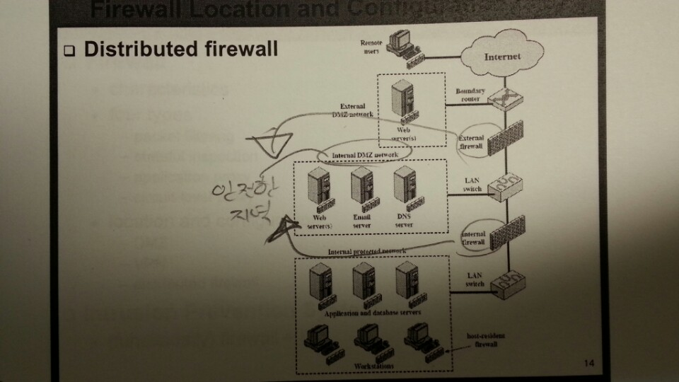1.10. Buffer Overflow¶
버퍼 오버플로우는 할당된 수용량 보다 데이터가 버퍼에 입력되어 다른 정보를 덮어쓰는 것을 말한다. 공격자는 시스템을 충돌내기위해 이러한 조건을 발생 시키거나 시스템의 제어를 얻는 코드를 삽입한다.
C에서 gets() 는 데이터의 량을 체크하는 코드를 가지고 있지 않다. 결과적으로 gets() 를 사용하여 다른 인접한 변수를 덮어쓸 수 있다.
스택 버퍼 오버플로우는 함수 호출 매커니즘에서 return 복귀 주소를 덮어쓰면서 이루어 진다.
마지막으로 쉘코드의 주소를 복귀주소로 넣게된다. 쉘코드는 공격자에 의해 작성되었으며 버퍼오버플로우에 의해 저장되곤 한다. 제어를 사용자 인터프리터로 넘긴다.
1.10.1. BOF 대비책¶
컴파일 시간에 방어할 수 있다. 고급 프로그래밍 언어는 강력한 타입 체크를 지원한다. BOF를 막는 추가적인 코드를 컴파일러에 포함하는 것도 좋다. 단 컴파일 시간이 길어지는 비용이 발생한다.
공간과 성능보다 타입의 안정을 위한 코딩 테크닉도 방법이다. 또 안정화된 라이브러리를 사용하거나 스택을 보호하는 매커니즘을 사용하는것이 좋다. 스택 보호 기법에는 stackguard 나 stackshield & return address defender등이 있다.
런타임 방어 기법은 다음과 같다. 실행 가능한 주소를 보호하는 방식이다. 공격자는 머신코드를 목표로 하는 버퍼에 저장하고 이를 실행한다. 이때 stack의 코드를 실행하는게 막혀있다면 공격은 실패할 것이다. CPU의 MMU에 의해 지원된다.
주소 공간 랜덤화 기법을 사용할 수 있다. 공격자는 쉘코드를 실행하기 위해 리턴주소로 미리 예측한 주소를 사용한다. 주소 예측을 어렵게 하기 위해 각각의 프로세스를 위해 랜덤한 위치에 스택을 놓는 주소 랜덤화 기법을 사용한다.
마지막으로 가드 페이지를 사용할 수 있다. 메모리의 중요한 지역을 보호하는 방식이다.
1.11. Software security¶
1.11.1. handling program input¶
삽입공격은 입력데이터에 대한 적절한 조치가 이루어지지 않은 것과 관련있다. 가장 일반적인 매커니즘은 헬퍼 프로그램으로 파라미터가 전달되고 이 프로그램이 처리되고 본래 프로그램에의해 사용되는 것이다. 스크립팅언어는 코딩에 대한 시간을 줄이기 위해 존재하는 프로그램이나 시스템 유틸리티를 재사용한다. 이러한 점 때문에 삽입 공격을 당하기 쉽다.
삽입공격은 커맨드 인젝션 공격, SQL 인젝션, 코드 인젝션으로 나눌 수 있다.
커맨드 인젝션은 UNIX finger 명령어에 메타 캐릭터를 삽입하고 명령어를 삽입하여 명령어가 웹 서버 권한으로 실행하게한다. 해결 방법으로 입력 데이터를 패턴과 비교하여 거절하도록 한다.
SQL 인젝션 공격은 Bob`;drop table suppliers 와 같은 SQL 메타캐릭터를 사용하여 공격한다. 메타캐릭터가 이스케이프와 함께 사용하게하여 효과를 사라지게 하거나 입력을 거절하는 방식으로 해결할 수 있다.
코드 인젝션 공격은 PHP 리모트 인젝션을 통해 어떤 해커의 URL을 참조하게 할 수 있다. 전역 변수에 폼필드 값을 저장하지 않게하고 상수값만 사용해서 막을 수 있다.
XSS 공격은 가장 일반적인 웹 어플리케이션 공격이다. 한 사용자에 의해 제공된 입력은 다른 사용자에게 출력으로 나가게된다. HTML에 이런 스크립트가 섞여있는데 스크립트 코드는 사용자의 브라우저에 의해 출력되는 다른 페이지와 연관된 데이터에 접근할때 필요하다. 공격은 모든 컨텐츠가 신뢰된다는 가정하에 이루어진다. (same origin policy 때문이다.) 그리고 권한을 얻어 민감한 데이터에 접근하기 위해 브라우저 보안 검사를 우회한다.
XSS reflection은 사이트의 URL 데이터에 악성 스크립트를 포함시켜 피해자가 링크로 이동하게 하여 공격하는 방식이다.
XSS의 대비책으로는 사용자에 의해 제공되는 입력을 검사하고 위험한 코드를 삭제하거나 이스케이프시켜 실행을 막는것이다.
인젝션 공격은 데이터가 타당한것을 보증함으로써 막을 수 있다. 텍스트 데이터는 출력할 수 있는 문자만 포함하여야 한다. 또 입력 데이터는 위험한 값과 비교를 통해 검사되어야한다. 공격 코드일 경우 데이터를 거절하거나 올바른 값으로 변환하는 과정이 필요하다.
1.11.2. handling program output¶
스크립트를 다른 유저에게 제공할때 이 데이터가 타당한지 검사할 필요가 있다.
1.12. Risk Assessment (위험평가)¶
위험평가란 IT 인프라의 위험을 확인하고 위험을 완화하는 것을 말한다. 위험평가에는 베이스라인 접근(baseline approach) , 경험적 접근(informal approach) , 상세한 위험 분석(detailed risk analysis) , 복합 접근(combined approach) 가 있다.
베이스라인 접근은 대부분의 위협을 보호할 수 있는 보안 지침서 를 따르는 방식이다. 산업에서 가장 모범이 되는 형태이다. 경험적 접근은 실용적인 방식으로 위협을 분석 및 접근하는 방식이다.
상세한 위험 분석은 상세한 위험 평가를 하는 정밀한 종합적인 접근법이다. 마지막으로 복합 접근은 가능한 빨르게 합리적인 방법으로 문제에 접근하는 방법이다.
1.12.1. Detailed Risk Analysis (상세한 위험 분석)¶
상세한 위험분석을 좀더 정리 해보면 다음과 같다.
처음 전후사정 및 시스템의 특징을 파악한다. 보안이 필요한 목표물과 위험에 노출될 만한 것 및 회사의 자산이 무엇인지 파악하는 것이다.
다음으로 위협과 위험, 어떤 취약점이 있는지 찾는다. 이때 위협으로는 인간에 의한 위협, 우발적 사고, 정교한 공격등이 있을 수 있다. 그 다음 위험을 본격적으로 분석한다. 조직에 있어서 위험은 사고의 발생과 그 비용만큼 위협을 가하는 요소이다. 위험이 발생할 가능성 / 영향 / 결과적인 위험 수준 등을 분석하고 분석한 위험 들을 표에 등록 하면 된다.
최종적으로 위험을 평가내리고 위험을 대처 및 처리한다. 위험을 대처하는 방식은 여러가지가 있는데 수용 , 회피 , 전가 , 위험 가능성 감소 , 위험 결과 감소 등이 있다. 위험 가능성 감소는 추가적인 보안장비를 둠으로써 할 수 있고 위험 결과 감소는 백업을 둠으로써 할 수 있다.
아래는 보안 정책 라이프 사이클 이다.
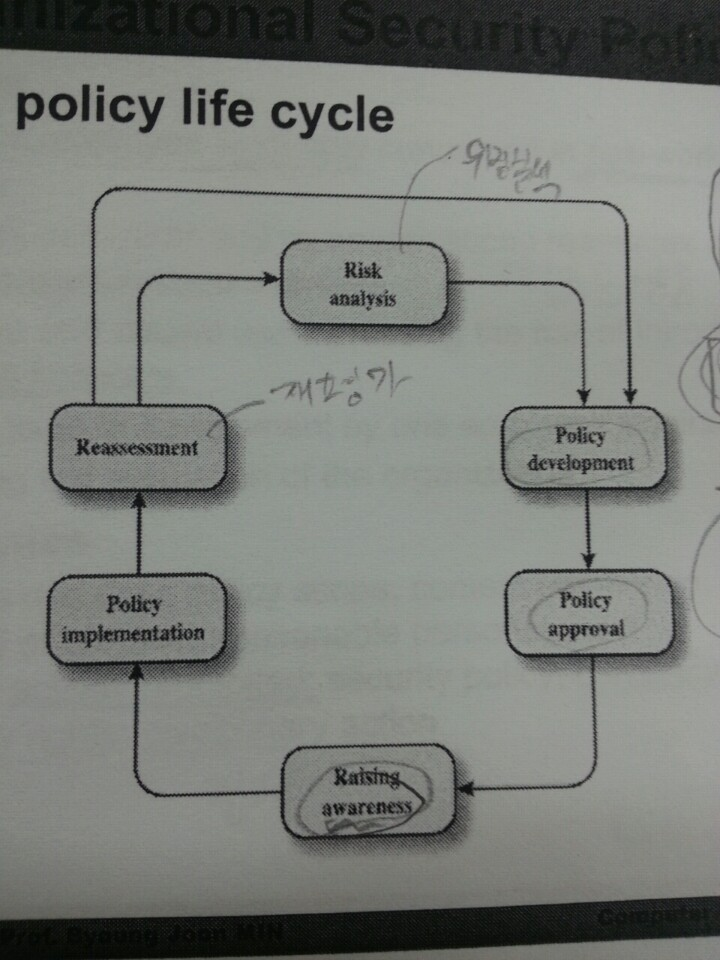먼저 위험이 분석 되면 정책 개발 , 정책 승인 이 이루어 진다. 구성원들의 정책 인식 이 이루어 지면 상황에 정책이 시행 된다. 마지막으로 정책이 적용 되었다면 정책을 재평가 해보고 위험 분석 을 통해 부족한 부분은 추가적으로 개발 되게 된다.
1.12.2. Security Auditing (보안 감사)¶
보안 감사란 시스템 제어가 타당한지 알기 위해 시스템의 기록과 행동을 검토하는 작업이다. 아래는 하나의 보안 감사 모델이다.
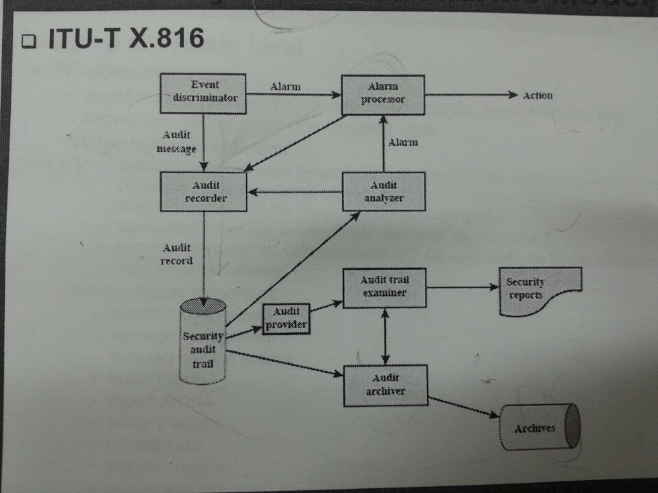이벤트 판별기에서 메세지를 감사 기록기에 보내게되고 그 다음 감사기록은 보안 감사 기록(trail)에 저장되는 구조를 가지고 있다.
이러한 보안 감사 기록(trail)에 저장된 기록을 분석하는 시기 및 절차는 다음과 같다. 일반적으로 사고가 난후 기록 검토 하거나 주기적으로 하거나, 실시간으로 하는 등 여러가지 시기에 기록 분석을 하는것이 좋다고 한다.
기록을 분석하기 위해 가장 먼저 로그 항목 및 포맷을 이해하고 전후상황 및 시스템의 상태, 조직의 정책, 사용되는 소프트웨어, 분석에 필요한 툴 등을 확인해야 한다. 사전 준비가 끝난 후 기록을 검토하는 단계에선 무엇을 검토 할지 선택하고 우선순위 를 정해야 한다. 사용자들의 행동, 특정한 자원에 수행되는 행동, 특정한 시스템과 연관된 행동 등을 검토할 수 있다. 우선순위를 정할 것은 시간, 종류, 출처, IP 주소, 빈도 등이다.
마지막으로 데이터 분석 에는 basic-alerting 과 baselining 또는 이벤트 상호관계 분석 을 사용한다.
basic-alerting 은 특정한 이벤트가 발생하는지 확인함으로써 분석하는 간단한 방법이다.
baselining 은 정상적인 패턴에 대비한 비정상적인 이벤트와 패턴을 정의하는 것이다. 이 부분은 위에서 검토 요소를 선택하는 부분과 비슷한데 먼저 보안 감사 기록으로 부터 네트워크 트래픽, 로그인 로그아웃, 관리자 계정, DHCP 주소 관리, 전체적인 로그 데이터등을 수집 한 후 베이스라인 기법으로 분석 한다. 예를들면 비정상 탐지, 스레시 홀드를 사용하여 분석한다.
1.13. 참조¶
- Challenge–response authentication: https://en.wikipedia.org/wiki/Challenge%E2%80%93response_authentication
- 공인인증서: http://crazia.tistory.com/entry/PKI-PKI-%EC%9D%98-%EA%B8%B0%EB%B3%B8-%EA%B0%9C%EB%85%90-%EA%B0%84%EB%8B%A8-%EC%84%A4%EB%AA%85
- P12: http://certhelp.ksoftware.net/support/solutions/articles/17251-what-is-a-p12-file-or-a-pkcs12-file-
- PKI: https://en.wikipedia.org/wiki/Public_key_infrastructure
- Diffie-Hellman: https://ko.wikipedia.org/wiki/%EB%94%94%ED%94%BC-%ED%97%AC%EB%A8%BC_%ED%82%A4_%EA%B5%90%ED%99%98
- 모듈러 연산: https://ko.khanacademy.org/computing/computer-science/cryptography/modarithmetic/a/modular-multiplication
- NTLM: https://blogs.msdn.microsoft.com/chiranth/2013/09/20/ntlm-want-to-know-how-it-works/